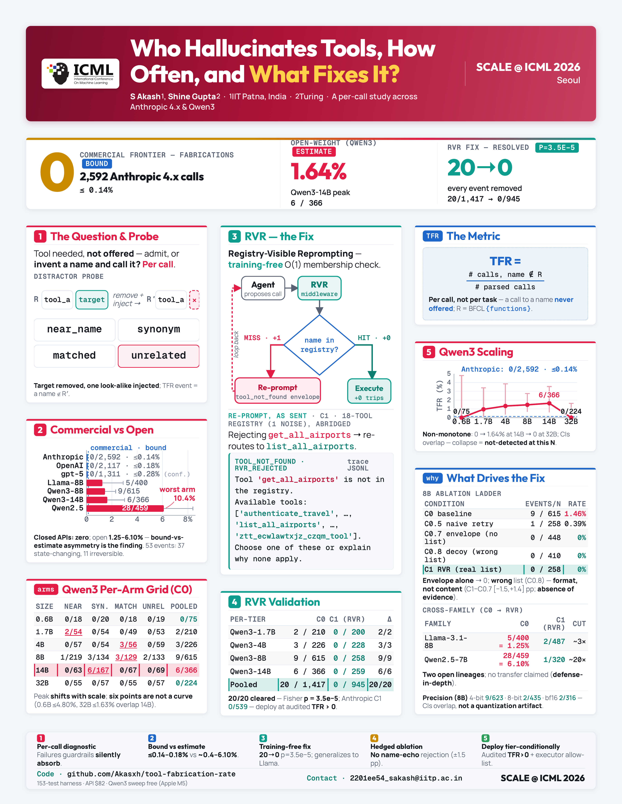

The Problem
An agent calls search_flights. The registry only contains find_flights. The call fails, and what stings is that the model knew the task and picked something plausible: it just got the name wrong. This is tool-existence hallucination, where an agent invokes a tool that was never in the provided registry. It is a known failure mode, but prior benchmarks measured it at the wrong grain: per-task or per-query, folded into composite success scores. We argue the right unit is the single call. We define a per-call Tool Fabrication Rate (TFR): of all parsed tool calls, the fraction whose name is absent from the registry. Per-call matters because a long agent trajectory can emit twenty bad calls, and a fabricated place_order is an action that fires, not a lookup that quietly fails.
The Setup
We run TFR over two populations on the Berkeley Function-Calling Leaderboard (BFCL) v4 multi-turn suite, using a four-distractor probe where the real target tool is removed and a synthetic look-alike is dropped into its slot. The commercial side spans the Anthropic 4.x family (Opus 4.7, Sonnet 4.4/4.5/4.6, Haiku 4.5) plus OpenAI gpt-4.1, gpt-4o, and gpt-5 tiers, queried at temperature zero through their tools-use APIs. The open side is Qwen3-Instruct at six sizes (0.6B to 32B) running locally in 4-bit MLX on an Apple M5, with a cross-family release covering Llama-3.1-8B, Qwen2.5-7B, Mistral, Gemma, Phi, and DeepSeek-R1-Distill. Across 6,000 plus opaque-baseline calls, we log per-call fabrication labels for every model.
Two Findings, Two Regimes
The zero-event frontier is commercial. Across 2,592 Anthropic calls under the opaque baseline, TFR is exactly zero (Clopper-Pearson 95% upper bound ≤ 0.14%). The five OpenAI gpt-4.1 and gpt-4o tiers also log zero, 0/2,117 pooled (≤ 0.18%), and gpt-5 adds 0/1,311. Commercial frontiers simply do not invent tool names on this probe.
Open-weight models do, and the shape is non-monotonic. Within the Qwen3 family, pooled per-call TFR climbs from 0% at 0.6B, peaks at 1.64% (6 of 366 calls) at 14B, then collapses back to 0% at 32B. The same arc holds across five model versions and eleven months on the Anthropic side, where it stays flat at zero. Worst-case per-arm rates reach 14/135 = 10.4% on Qwen2.5 with a synonym distractor. A same-family check on Qwen2.5-7B (6.10%) and an independent lineage in Llama-3.1-8B (1.25%) confirm the failure is not a single-release artifact. We report the 14B-to-32B drop descriptively, not as a fitted scaling law, and a precision control shows fabrication persists at full bf16 precision, so it is not merely a 4-bit quantization artifact.

Fabrications Are Actions, Not Failed Lookups
A per-call rate would understate the exposure if the invented calls were harmless stubs. They are not. Of the 53 open-weight fabrication events, 70% (37 of 53) name state-changing operations rather than read-only queries, and every one carries a concrete, execution-ready argument object. Eleven name irreversible business transactions: fabricated place_order calls with a quantity and a buy order type, cancel_booking calls carrying a booking and card id, each ready to fire. Under a permissive executor that fuzzy-matches a requested tool to the nearest registered one, these are unintended actions, not safe no-ops.
A Training-Free Fix: Registry-Visible Reprompting
We propose Registry-Visible Reprompting (RVR), a single-turn middleware placed between the agent and the tool executor. On a registry miss it returns one re-prompt wrapping a structured tool_not_found envelope plus the sorted list of available tools, then lets the next decoding step re-select. It is training-free, uses one re-prompt (a production-realistic budget), and needs no logit or activation access. Across the four Qwen3 tiers with non-zero TFR, RVR clears all twenty pooled fabrications: 20/1,417 vs 0/945, Fisher's exact one-sided p = 3.5 × 10-5. It generalizes across lineages, cutting Llama-3.1-8B from 1.25% to 0.41% and Qwen2.5-7B from 6.10% to 0.31%.
Why It Works: Format, Not Content
A powered ablation locates the fix. We compare RVR (a structured rejection plus the real registry) against a content-controlled arm that holds the same rejection envelope but swaps in a list of guaranteed-absent decoy names. The wrong-list arm recovers as well as the real one (Fisher p = 1.0), and even an empty-list structured error drives fabrications to zero. Recovery is therefore driven by the rejection's format, a message-level signal that the last call was rejected, not by the registry's content. The practical upshot: a deployer who wants prevention without echoing internal tool names can ship the structured rejection alone and lose nothing detectable.
Why It Matters
At the per-call grain the commercial-versus-open split is sharp and actionable. A fabricated tool name is not just a failed call: paired with a permissive executor it is an attack surface that an adversary can prime by registering the hallucinated name and waiting for the model to reach for it. The contribution is a deployer-facing one: a per-call diagnostic that exposes failures aggregate metrics hide, a single intra-family number (the non-monotonic Qwen3 curve), and a training-free mitigation that clears every logged fabrication. We release the harness, the per-call traces, the eleven-month audit, and per-tier validation, with 153 unit tests.